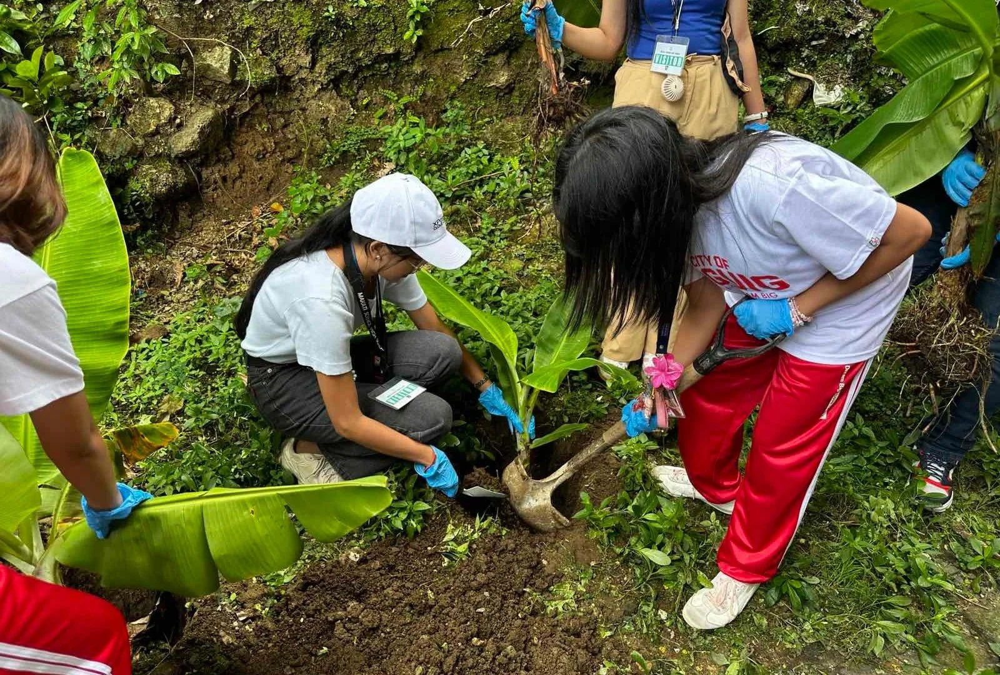

We are a dedicated group of students from the Philippine Science High School – Southern Mindanao Campus. InnovatPH was founded on the belief that scientific literacy and youth advocacy are the most powerful tools for addressing the nation's development needs, focusing on SDG 9.
Our mission is to foster an action-oriented mindset. By bridging the gap between global sustainable development goals and concrete, local applications, we can inspire our peers to become the next generation of resilient engineers and thoughtful policymakers.
Our curriculum emphasizes applied science, which gives us a unique perspective on SDG 9. We understand the principles of material science needed for earthquake-resilient structures and the engineering required for efficient public transit.

School & Section: Philippine Science High School – Southern Mindanao Campus, 9-Sodium
Role: Project Strategist, Content Curator, Web Designer, and Chief Photographer for project visuals.
Advocacy Focus: Khir is passionate about sustainable civil engineering and leveraging data science to predict and mitigate disaster risks in local infrastructure projects. This platform serves as a culmination of his academic knowledge and passion for real-world social advocacy in the Philippines.
Email: khir.veloso@pshs.edu.ph
Instagram: @khir.veloso
LinkedIn: /in/khirveloso